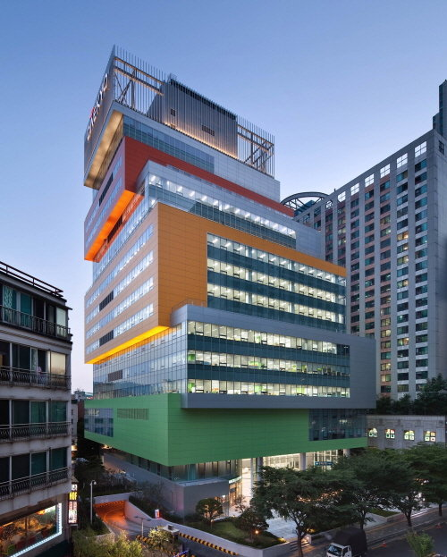

산업
교육 서비스
기업 규모
1000명 이상
사용 목적
계약 관리 / 검토, 이력 관리, 법무 아카이브
주 사용 기능
계약 관리, 법무 게시판, 법률 자문

대교 / 플랫폼사업지원팀 사영선 팀장
대교는 ‘가르치며 배우며 서로 성장한다’는 ‘교학상장(敎學相長)’의 경영철학으로 대한민국 교육을 이끌고 있는 국내 최고의 전인교육 기업입니다. 눈높이 교육, 유아교육, 출판, 학원 사업, 온라인 교육 사업 등 다양한 사업분야에서 활약하고 있으며, 체계적이고 전문화된 교육 플랫폼 기업으로의 변화를 위해 노력하고 있습니다. 플랫폼사업지원팀은 그런 변화에 도움이 될 수 있는 시스템을 고민하고 기획하고 구현하는 일을 하고 있습니다.
기존에는 대부분의 계약서가 수기로 작성되었습니다. 많은 계약이 체결되고 있지만 중앙 관리가 되고 있지 않아 계약서 분실 등의 크고 작은 문제들이 빈번하게 발생하고 있었습니다.
법무팀의 역할이 강화되고 중요해지는 시류에 맞춰 장기적으로 법무 업무를 체계적으로 관리할 수 있는 좀 더 유연한 시스템을 도입하고자 했습니다. 계약 관리에 적합한 서비스를 검색해보니 SI성으로 구축을 해주는 회사이거나 문서관리 시스템을 계약 관리로 제안하는 업체들이 대부분이었습니다. 내부 니즈에 딱 맞는 시스템이 없어 차선책으로 문서관리 시스템의 도입을 검토 하던 중, 전문적인 기업용 법무(계약)관리시스템으로 법틀 하나가 검색 되었습니다. 전문화된 법무(계약)관리 시스템을 서비스하는 ‘법틀’을 처음 알게 되어 바로 미팅을 요청하였고, 제품에 대한 상세한 설명을 듣고 테스트를 하면서 법무팀의 업무를 이해하고 만들어진 시스템으로, 기능과 사용성 측면에서 완성도가 높다는 생각이 들었습니다. 추가적으로 대교만을 위한 몇 가지 커스텀 개발을 조건으로 계약을 체결했습니다.
가장 만족하는 점은 법틀 도입으로 인해 계약이 체계적으로 관리되고 있다는 점입니다. 특히 법무검토시간이 평균적으로 걸리던 시간의 약 1/3수준으로 절감되었고, 전반적으로 계약서 자체에 문제가 있을 때 바로 확인하고 검증할 수 있다는 것이 큰 장점이라고 생각됩니다. 관리적인 측면 뿐 아니라 법무 업무의 프로세스를 정립하는데 큰 도움이 되었습니다. 계약관리 뿐 아니라 법무 게시판, 법률자문 기능도 한곳에서 제공되므로, 사용성과 기능성 모두에서 만족도가 높은 시스템입니다.
모든 기업에는 각각의 업무프로세스와 관리방식이 있을 것입니다. 그렇다고 ‘현재 업무프로세스대로 내부 시스템을 구축하는 것이 가장 좋은 걸까?’ 라는 생각이 듭니다. 기업의 업무프로세스와 관리 기준은 내, 외부적 요인으로 언제든 변할 수 있기에, 유연한 플랫폼을 사용하여 변화에 대응하는 것이 기능과 비용 면에서도 효과적일 수 있다고 생각합니다. 대교의 경우 현재 내부에서 할 수 있는 최선의 선택을 했고, 만족하고 있습니다. 다른 기업 및 법무팀들 역시 이런 좋은 Best Practice를 활용하고자 한다면, 법틀은 분명 최고의 선택이 될 것이라 생각합니다.

제품을 확인하고 싶으신가요?
기업 법무 전문기업 법틀에서 고객의 고민을 나누겠습니다. 070-8252-8076 / sales@buptle.com